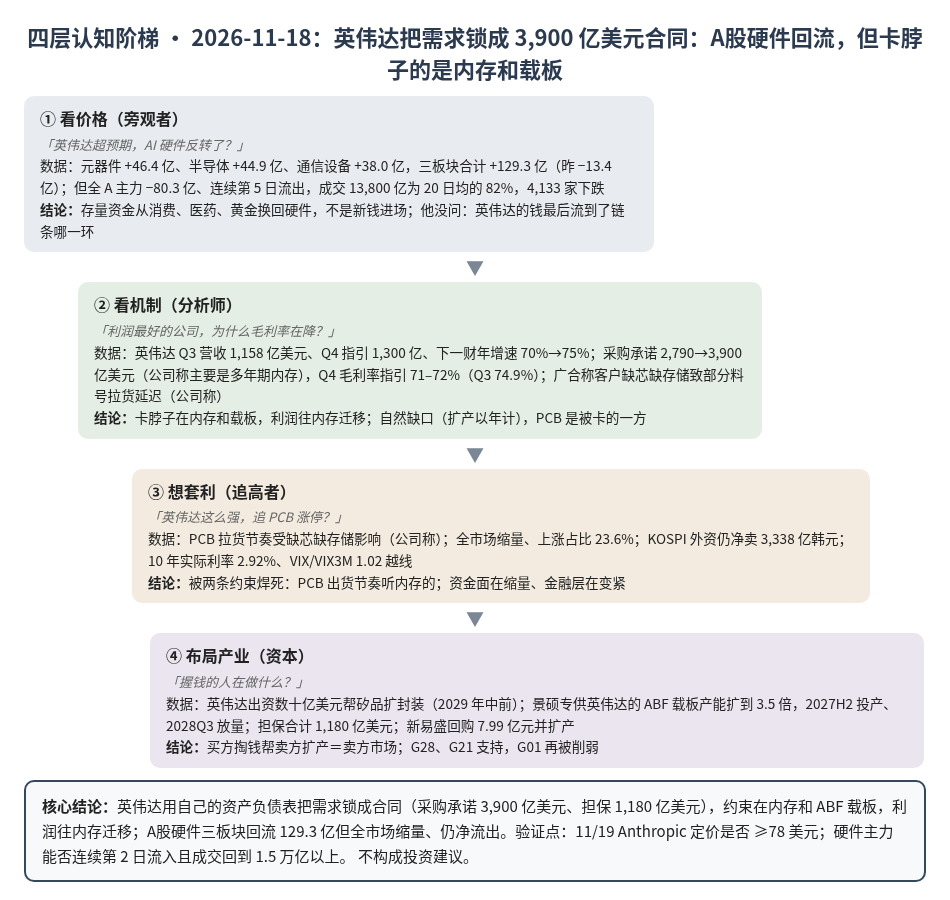
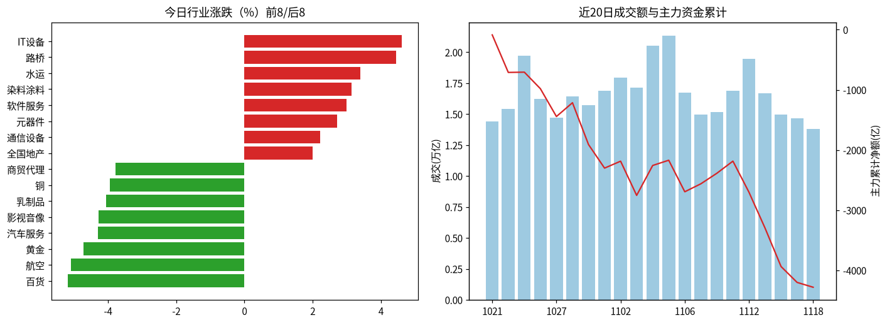
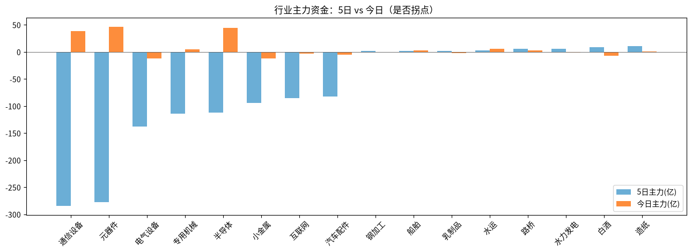

A股投研日报 · 2026-11-18（四层认知版）
- 主线
- 英伟达把需求锁成 3,900 亿美元采购合同，A股硬件回流但没有新钱进场
- 最重要变化点
- 元器件、半导体、通信三板块主力合计由昨日 −13.4 亿转为 +129.3 亿；全 A 仍 −80.3 亿、成交 13,800 亿为 20 日均的 82%
- 机制含义
- 卡脖子的是内存和载板，英伟达用自己的钱和担保锁产能；PCB 是被卡的一方，不是定价的一方
- 下一个观察点
- 11/19 Anthropic 上市定价：≥78 美元（区间上限）＝融资胃口还在；<70 美元＝融资层裂缝扩大
本报告为基于公开数据的研究分析，不构成投资建议。
方法：四层认知阶梯 + 历史周期律。数据 Tushare（见附录）。不构成投资建议。
今日市场概况
上证 +0.09% 收 3,587.83；创业板 +0.85% 收 2,311.62（5 日仍 −10.13%）；科创50 +2.19%。成交 13,800 亿元，低于 20 日均 16,767 亿元；上涨家数只占 23.6%，个股中位数 −1.2%。全 A 主力 −80.3 亿元，连续第 5 日流出，但流出额连续 3 天收窄（−640.0→−264.0→−80.3）。流入居前：元器件 +46.4 亿、半导体 +44.9 亿、通信设备 +38.0 亿；流出居前：银行 −26.3 亿、航空 −16.7 亿、化学制药 −15.1 亿；黄金板块 −4.71%（Tushare）。龙虎榜机构合计 +13.05 亿元（昨 −29.84 亿）。海外：美债 10 年期 11/17 纽约尾盘 5.10%（源）；KOSPI +1.99% 收 5,067.44，重回 5,000，外资仍净卖 3,338 亿韩元（源）；DDR5 16Gb 现货 60.50 美元，+0.28%（源）。
变化点
世界观定位：阶段不变（三国→楚汉过渡带），回退条件不变。世界指标今日天气：整体多云：钱开始变紧、股市偏贵偏热、AI 链有裂缝、中国经济还没回暖，留意。本周变化：③「股市贵不贵、热不热」🔴→🟡。新越线：美股恐慌指标 VIX/VIX3M 11/17 升到 1.02，越过 1.00 危险线（短期恐慌高过远期）。主要矛盾：实物层很硬（DDR5 稳、韩国芯片出口 +331.2%），金融层在变紧（10 年实际利率 2.92%、CoreWeave 违约保险价约 1,152bp、市场重新押注美联储加息），压力还关在金融层。
和昨天、上周比：昨天只有半导体转流入，通信、元器件还在流出；今天三条一起回流，11/17 的验证点「英伟达不下修」「半导体连续第 2 日流入」都命中。上周三（11/11）全 A 主力 +201.5 亿、成交 16,887 亿，一周后成交缩了 18%。
看价格：「英伟达超预期，AI 硬件反转了？」还不能说。硬件三板块流入 129.3 亿，但全 A 仍净流出，4,133 家下跌：是存量钱从消费、医药、黄金换回硬件，不是新钱进场。
看机制：「为什么利润最好的公司毛利率在降？」英伟达三季度营收 1,158 亿美元，四季度指引 1,300 亿，下一财年增速上调到约 75%；但采购承诺一季度从 2,790 亿涨到 3,900 亿美元，公司称主要是多年期内存采购，下一财年到期 2,030 亿；四季度毛利率指引 71%–72%（三季度 74.9%），公司称供应成本大变、四季度是底（源）。广合科技称下游算力客户因缺芯缺存储，部分料号拉货延迟（公司称，源）。推断卡脖子的是内存和载板，利润在往内存迁移；这是自然缺口（扩产以年计）。风险敞口接口：复核后有效断供 Δ$≈0。
想套利：「追 PCB 涨停」被两条约束卡住：PCB 拉货节奏听内存的；全市场缩量，KOSPI 外资仍在卖。
布局产业：买方掏钱帮卖方扩产：英伟达出资数十亿美元帮矽品扩封装（2029 年中前），景硕把专供英伟达的 ABF 载板产能扩到 3.5 倍，2027 下半年才投产、2028Q3 才放量（源）。G28（载板到 2028 仍紧）、G21（PCB 不卡出货）读数支持；内存被多年锁量，G01（2027 HBM 只略紧）再被削弱。
判断：英伟达像萧何转漕——自己筹粮（担保 1,180 亿美元）养前线；粮道怕的是利率，不是需求。
中长期展望（3–12 个月与 2027）
3–12 个月：约束在内存和载板（G28），利润往内存迁移（G01 再受挑战）；「钱紧」「AI 链」两问仍黄，VIX 期限结构已越线。
2027：P023（四大云首次 2027 开支指引 ≥8,500 亿美元）仍是总闸门；需求照 +75% 兑现，PCB 是被卡的一方而非瓶颈（G21）。
什么会改变展望：①四大云指引合计 <8,500 亿美元；②10 年实际利率 >3% 且 CoreWeave 违约保险价继续升；③DDR5 现货单周跌超 3%。
七、明日/本周验证点（可证伪）
- 11/19 Anthropic 定价 ≥78 美元；<70 美元则融资层裂缝扩大（源）。
- 11/19 硬件三板块主力合计连续第 2 日净流入且成交 ≥15,000 亿；否则今天只是缩量反抽。
- 本周（至 11/20）中芯、华虹任一家公开确认 2027 年调价；明确否认则国内段证伪。
- 本周 DDR5 16Gb 现货跌破 58.69 美元（较 60.50 跌 3%）。
附录 A：机会表、检查清单、验证点回顾、风险复核
机会表（产业/环节层面，不构成投资建议）
| 环节 | 变化信号 | 认知层级 | 关键风险 / 证伪 |
|---|---|---|---|
| 内存（HBM/DRAM） | 英伟达多年期内存采购，采购承诺 3,900 亿美元；高盛称市场上调海力士 2027 HBM 利润预期近 30%（源） | 第 2→4 层 | DDR5 现货单周跌超 3%；四大云 2027 开支指引不及 8,500 亿美元 |
| ABF 载板与先进封装 | 景硕产能扩 3.5 倍（2027H2 投产）、英伟达出资帮矽品扩产 | 第 4 层 | 2027 年载板报价不涨（P032 反向） |
| 追涨 PCB / 算力租赁 | 陷阱：缩量反抽，广合称部分料号拉货延迟 | 第 1 层 | 硬件主力连续流入且成交回到 1.5 万亿以上 |
检查清单应用
- 缺口性质：自然缺口为主。内存、载板扩产以年计（景硕新产能 2027H2 起）；出口管制是人为变量（英伟达指引不含中国数据中心收入，新规影响仍在评估）。
- 替代弹性：内存与 ABF 载板短期几乎不可替代；PCB 板厂之间可替代，所以 PCB 拿不到定价权。
- 领先 vs 滞后：领先＝采购承诺、DDR5 现货、载板扩产时间表、主力资金、Anthropic 定价；滞后＝英伟达毛利率、PCB 季报利润、股价。
上一交易日验证点回顾（11/17 → 11/18）
| # | 验证点 | 读数 | 判定 |
|---|---|---|---|
| 1 | 英伟达营收 ≥1,087 亿美元且不下修开支表述 | 1,158 亿；四季度指引 1,300 亿；下一财年增速 70%→75% | 命中 |
| 2 | 11/18 半导体主力连续第 2 日净流入 | +44.9 亿（昨 +31.5 亿） | 命中 |
| 3 | 至 11/20 中芯、华虹公开确认 2027 调价 | 今日无新确认（华虹 11/6 称 2027 均价仍会升、不激进） | 待验证 |
| 4 | 本周 DDR5 16Gb 跌破 58.52 美元 | 60.50（11/18） | 未触发 |
供应链风险敞口（人工复核版）：脚本版见 risk_section_20261118.md。口径为 GB300/NVL72 当量柜年化系统价值；Δ$ 为事件类型假设模板，仅用于排序，非预测。脚本 7 条，误匹配 7 条（6 条为扩产/合作新闻，1 条为距福岛节点约 251 公里的 5.2 级地震、无受损报道）。复核后今日有效断供 Δ$≈0，基线维持年化 EL 57.7 亿美元（10/21）。采集降级：GDELT 限流或 0 篇；巨潮公告匹配未恢复。
世界指标数据说明：今晚 update.py 数据源 14/15 成功；A 股融资余额沿用 11/13 读数；「AI 泡沫监控」子模块报错（空数据求中位数），不影响世界看板。
取数说明：Tushare 接口 20:25–20:32 持续返回 HTTP 502，库静默返回空表；已在 fetch_v3.py 加「无列空表视为失败并重试」，重跑后全部接口 OK。
英伟达管理层变动：黄仁勋 11/12 辞职，CFO Kress 任临时 CEO（源）；本报只用其财务与供应链数字，治理风险不纳入判断。

一句话总结：英伟达像萧何转漕：自己筹粮养前线，粮道怕的是利率，不是需求。
本报告为基于公开数据的研究分析，不构成任何投资建议。
附录：市场数据（证据底稿）


| 收盘 | 今日% | 5日% | 20日% | MA20 | 成交(亿) | |
|---|---|---|---|---|---|---|
| 上证指数 | 3,587.83 | 0.09 | -2.52 | -3.37 | 3,648.40 | 6,502.32 |
| 深证成指 | 10,659.41 | 0.20 | -6.41 | -8.93 | 11,152.94 | 3,612.45 |
| 创业板指 | 2,311.62 | 0.85 | -10.13 | -14.22 | 2,491.24 | 1,421.25 |
| 科创50 | 1,247.99 | 2.19 | -4.03 | -7.09 | 1,256.97 | 907.48 |
| 上证50 | 2,764.54 | -0.14 | -0.04 | 0.64 | 2,768.42 | 1,173.89 |
| 沪深300 | 3,983.77 | 0.18 | -2.26 | -3.12 | 4,044.60 | 3,899.14 |
| 中证500 | 6,282.22 | -0.01 | -6.42 | -8.16 | 6,531.98 | 2,393.56 |
| 中证1000 | 6,052.82 | -0.65 | -9.25 | -10.73 | 6,433.02 | 2,644.11 |
行业资金热力（按5日主力净额排序，前8/后8）
| industry | 今日% | 5日% | 20日% | 今日主力(亿) | 5日主力(亿) | 资金连续天数 |
|---|---|---|---|---|---|---|
| 造纸 | -2.1 | -10.6 | -2.8 | 0.5 | 10.7 | 13.0 |
| 白酒 | -1.6 | 2.5 | 9.1 | -6.7 | 8.6 | -1.0 |
| 水力发电 | 0.5 | 2.4 | 0.1 | -0.7 | 5.7 | -1.0 |
| 路桥 | 4.4 | 11.1 | 27.2 | 3.0 | 5.3 | 1.0 |
| 水运 | 3.4 | 0.3 | -2.0 | 5.3 | 3.2 | 1.0 |
| 乳制品 | -4.1 | 5.3 | 13.3 | -2.4 | 1.9 | -2.0 |
| 船舶 | 1.7 | 1.1 | -5.9 | 2.4 | 1.8 | 1.0 |
| 钢加工 | 0.3 | -4.8 | 12.9 | -0.1 | 1.7 | -1.0 |
| 通信设备 | 2.2 | -18.5 | -29.0 | 38.0 | -284.2 | 1.0 |
| 元器件 | 2.7 | -13.2 | -17.2 | 46.4 | -276.9 | 1.0 |
| 电气设备 | -0.8 | -9.8 | -4.6 | -12.2 | -138.2 | -6.0 |
| 专用机械 | 0.4 | -15.0 | -9.3 | 4.7 | -114.2 | 1.0 |
| 半导体 | 1.6 | -6.4 | -2.2 | 44.9 | -112.1 | 2.0 |
| 小金属 | -1.7 | -13.5 | -9.8 | -11.6 | -94.0 | -5.0 |
| 互联网 | 0.5 | -11.7 | -1.1 | -3.2 | -85.2 | -6.0 |
| 汽车配件 | -1.5 | -14.2 | 1.3 | -5.1 | -82.7 | -5.0 |
市场情绪时间序列（近10日）
| trade_date | 成交(亿) | 上涨占比% | 主力净额(亿) | 个股中位涨跌% |
|---|---|---|---|---|
| 20261105 | 21351.0 | 87.4 | 86.9 | 2.0 |
| 20261106 | 16716.0 | 13.6 | -524.0 | -1.9 |
| 20261109 | 14945.5 | 40.2 | 132.1 | -0.3 |
| 20261110 | 15167.5 | 76.7 | 175.5 | 1.3 |
| 20261111 | 16886.9 | 63.5 | 201.5 | 0.6 |
| 20261112 | 19458.7 | 15.7 | -516.5 | -1.6 |
| 20261113 | 16670.7 | 13.7 | -595.2 | -2.0 |
| 20261116 | 14941.6 | 20.4 | -640.0 | -2.1 |
| 20261117 | 14675.2 | 23.8 | -264.0 | -1.3 |
| 20261118 | 13800.2 | 23.6 | -80.3 | -1.2 |
今日上涨1318家/下跌4133家，涨幅≥9.8% 60家、跌幅≤-9.8% 60家¹。
龙虎榜侧写：机构专用席位合计 +13.05 亿；净买入居前 沪电股份(+5.61亿)、锋龙股份(+3.68亿)、生益电子(+3.43亿)，净卖出居前 协创数据(-1.49亿)、西陇科学(-1.35亿)、通化金马(-0.77亿)。 沪深股通活跃股：成交前五为中际旭创、寒武纪、宁德时代、新易盛、北方华创（成交额≠净买入）。
注：¹涨跌停为按±9.8%阈值近似（limit_list_d无权限）。²行业为Tushare stock_basic分类自行聚合（sw_daily/ths_daily/行业资金流接口无权限），成交加权、剔除N/C新股，成分≥8只。³主力=大单+特大单净额（moneyflow）。⁴2024年8月起北向每日净买入停止披露，moneyflow_hsgt/hsgt_top10数值为成交口径，不可解读为净流入。⁵新闻/公告接口无权限，改用新浪财经7x24公开快讯自动抓取+人工补充。
接口状态：trade_cal:OK；stock_basic:OK；index_daily:OK；moneyflow_hsgt:OK；hsgt_top10:OK；top_list:OK；top_inst:OK；index_dailybasic:OK；新浪7x24(公开):OK 3298条（11-17 13:55 起）